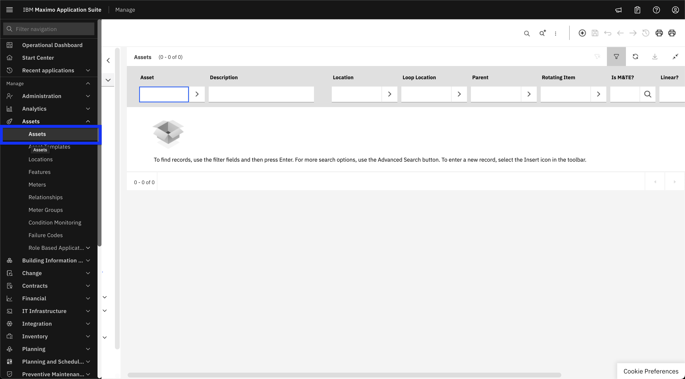
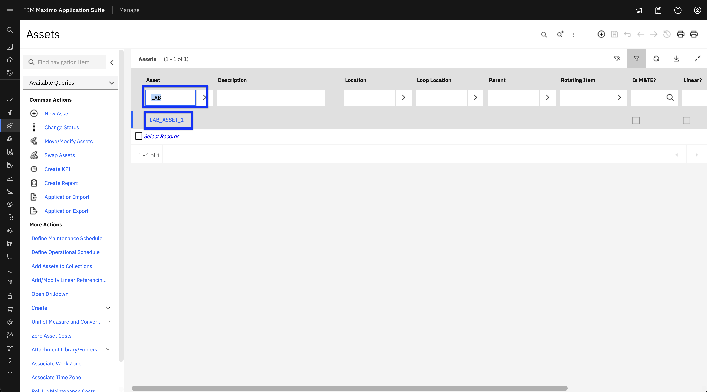
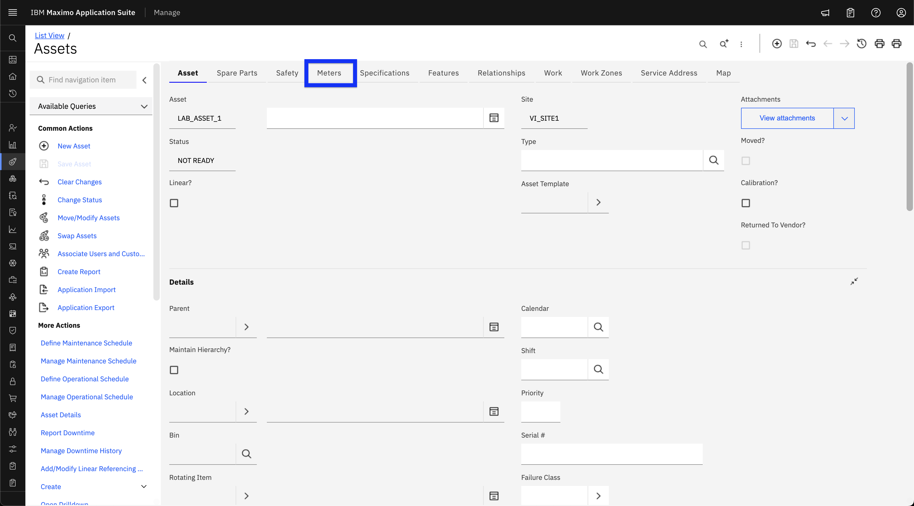
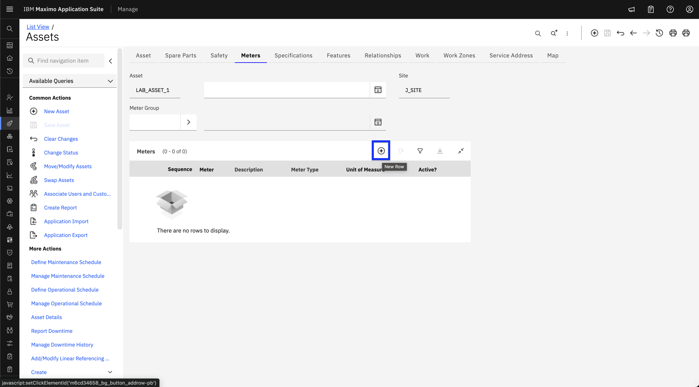
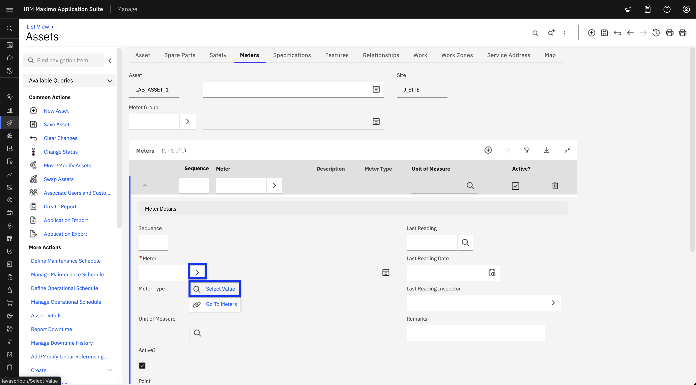
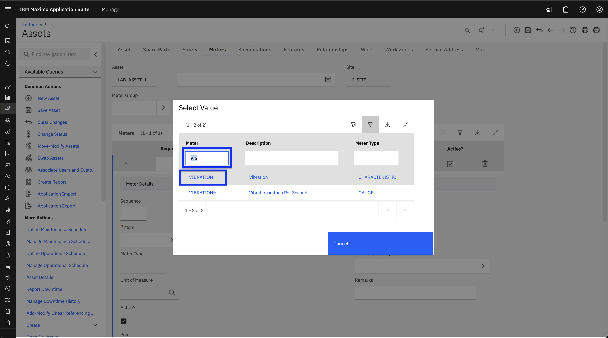
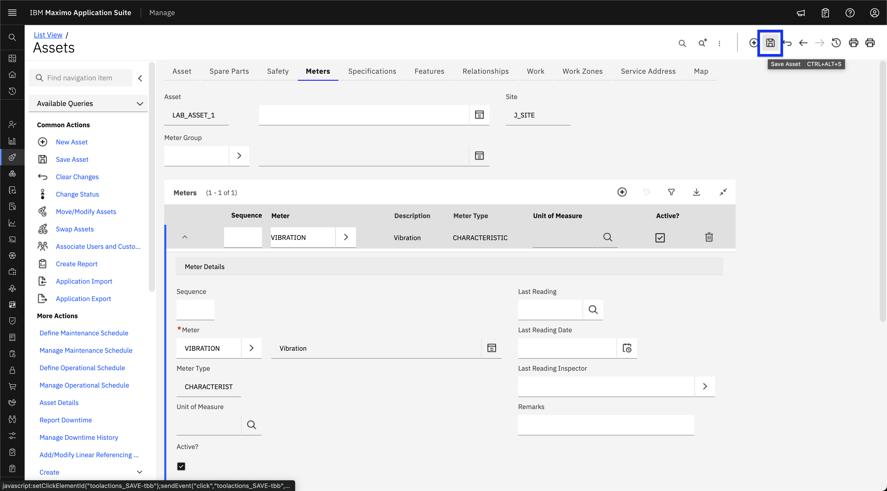
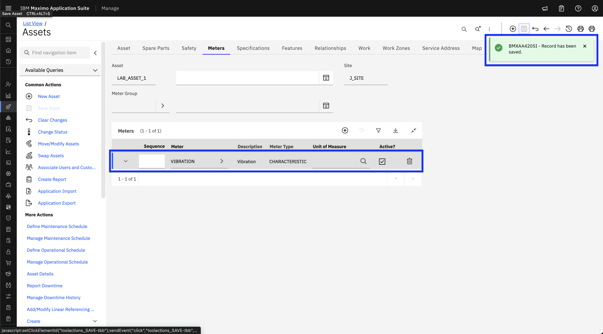
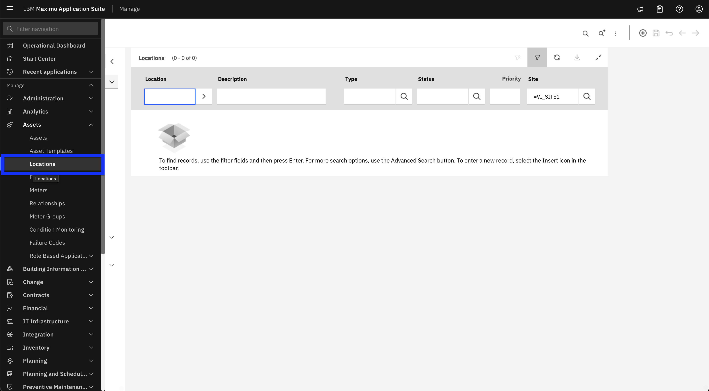
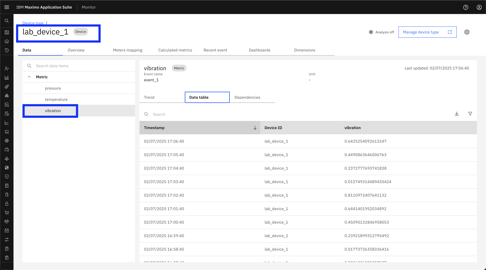

Pre-Requisite Instructions
Here are the required pre-requisites for the Maximo Monitor Meter/Metric Mapping exercises.
Attention
This lab requires Maximo Application Suite 9.1 or later.
MAS application entitlement must be Limited or higher.
All Exercises
All Exercises require that you have:
-
A computer with a Chrome browser and internet connectivity.
-
User access to a Maximo Application Suite 9.1 environment.
Your Exercise facilitator should have provided you with the information on your access. -
An IBM ID. If you don't have an IBM ID you can get one here:
o ClickLogin to MY IBMbutton
o ClickCreate an IBM IDlink -
Test your access to the Maximo Application Suite environment.
-
Please complete the following exercises.
Attention
You should have the necessary permissions to view/create/edit/delete meter mappings.
Exercise 1 - Add a meter to an Asset or Location in Maximo Manage
Note
To create Assets and Locations, refer to the step-by-step instructions in the Maximo Monitor Hierarchy Lab.
Add a meter to an Asset
-
Log in to MAS and navigate to Asset page ( Manage → Assets → Assets ) in Manage UI:
 -
Search for the Asset by name and click on it to view its meters. 
-
Click on the Meters tab. 
-
Click the Add Meter icon (➕ in a circle). 
-
Click the “>” icon in the Meter field and click on Select value from dropdown. 
-
Search for the meter by name and Select a meter from the meter table. 
-
Click the Save icon (💾) at the top. 
-
Verify the meter is added in the list. 
Add a meter to a Location
-
Log in to MAS and navigate to Location page ( Manage → Assets → Locations ) in Manage UI:
 -
Search for the Location by name and click on it to view its meters.
-
Refer to the Asset section above and continue from Step 3 to complete the process. Practice the process on your own.
Exercise 2 - Create and Assign a Device with Metric
Note
Refer to the step-by-step instructions in the Device and Device type Setup Lab for this exercise.
- Create a device with metric in the Monitor UI.
- Turn on the data simulator for the device.
- Assign the device to the Location or Asset created in Exercise 1.

Note
Only numeric metrics can be mapped to meters. Ensure you have created a numeric metric in the device type.